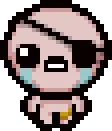
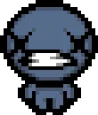
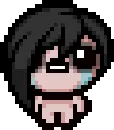

Isaac
es el personaje
inicial del juego, el niño que ha distorsionado su propia realidad por los abusos de su
madre y
el trauma del abandono de su padre, y deberá liberarse a sí mismo en este
recorrido.
Magdalene
Isaac con pelo largo rubio, adoptando forma femenina. Es la representación de la hija
que la
madre de Isaac siempre ha querido tener, en lugar de un niño.
Cain

es la representación de Isaac quien se ve a sí mismo como un ladrón o un embaucador.
Lleva un ojo dañado, por lo que sólo puede disparar por su ojo derecho.
Judas
Isaac visto a sí mismo como un traidor, como alguien alejado de la gracia de Dios.
???

Representa la muerte por asfixia de Isaac al estar encerrado dentro del cofre. También
es llamado "Blue baby" o bebé azul.
Eve

Isaac representado como portador del pecado original, pues es así como lo ve su madre.